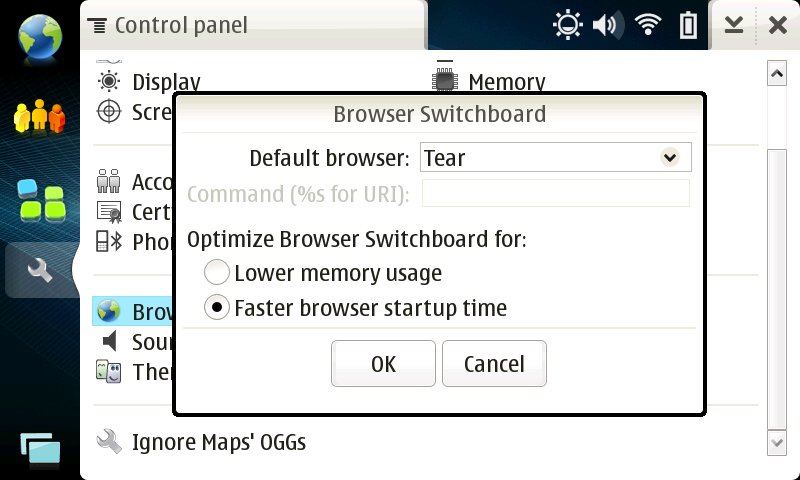
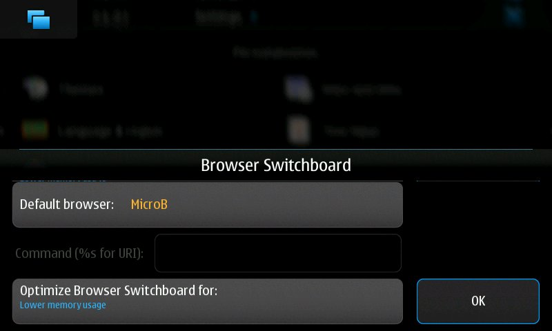
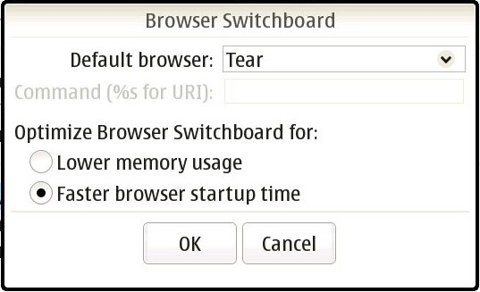

 
Browser Switchboard (formerly browser-proxy) is a program which allows you to choose which browser to use as the default browser on Maemo devices. It supports MicroB, Tear, Fennec/Mobile Firefox, and Midori out of the box, and can also be used to launch MicroB without having browserd running.
Version 3.0rc1 (2009/12/18) (Diablo package)
Version 2.2 (2009/12/14) (Diablo package)
Source code, packages for Diablo, and EXPERIMENTAL packages for Fremantle can be found on the maemo Garage download page. Packages can also be installed from the maemo extras-devel repository (though don't blindly enable extras-devel and install/upgrade — see the linked page first!)

You can now select the default browser by using the Browser Switchboard
applet in the Control Panel. Links in most applications, locally-saved
web pages opened from the file manager, and (for Maemo 4.x) entries in
the Web sidebar panel will open in the browser that you select as the
default. If you don't configure a default browser, MicroB will continue
to be used as the default browser.
No matter which browser you select as the default, MicroB can always be opened via the Web menu entry in the applications menu (for Maemo 4.x, located in the Internet menu by default), or by running "browser" from the shell. While MicroB is open, it will receive all links from other applications; closing MicroB will restore your chosen default browser.
Some users have reported that a restart may be necessary to ensure that Browser Switchboard is functioning. If you experience trouble after installing the package, try rebooting your device first.
See the README for further instructions on how to configure and use Browser Switchboard.
You can email your question to the maintainers (see below), or you can take it to the Tear thread on the talk.maemo.org forums.
The latest source is available via a Git repository; you can check it out by running
git clone https://git.maemo.org/projects/browser-switch
from a shell. You can also browse the repository using gitweb.
Bug reports and patches can be emailed to the maintainers, or posted on the forum thread.
Steven Luo <steven+maemo [at] steven676.net> is the primary maintainer of Browser Switchboard, with assistance from Jason Simpson (the original developer).